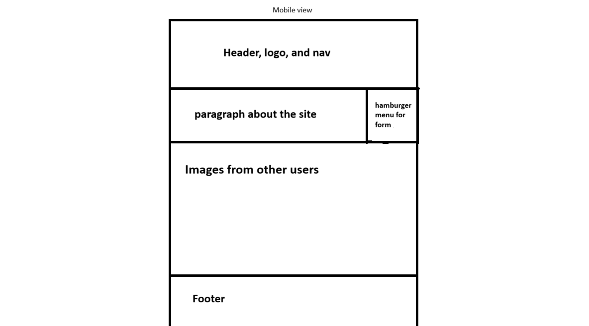
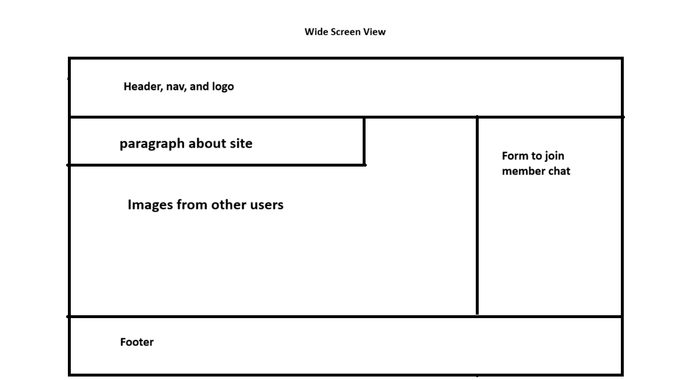

Void Core Game Design
This is the name i have choosen for my site and it was choosen to represent a website that people can go to in order to get help with making their own game.
For Void Core Game Design
this site is a gathering place for budding game designers to come to get help in making their game.
For Void Core Game Design
Scenarios: what are some good ideas for making a level of 2d platformer? is there someone that has any experience in character design?
Color Scheme and Typography
The colors that i plan to use are the following: Blood Orange for the background of things like the header, footer, and the background box of any images i plan to use. A will use a simple black for things like text color. As for Fonts i will use google snas for the main body, and one called bebas neue for my header, footer, h1, and h2.
Wire Frames

